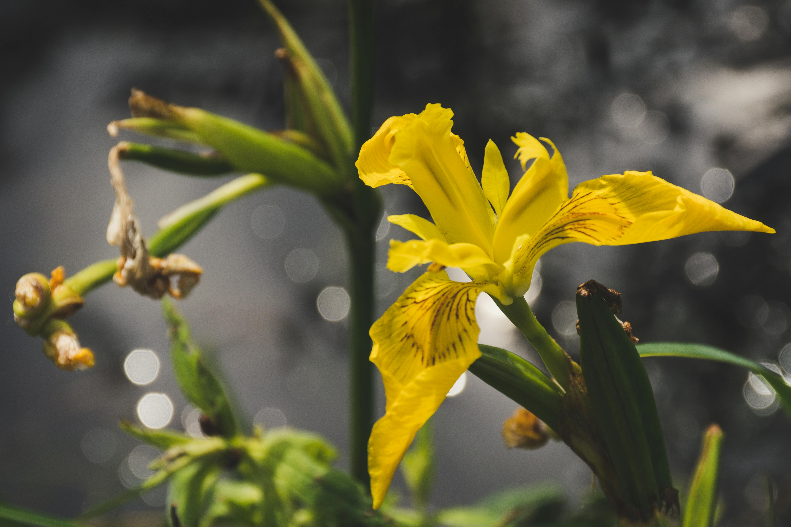
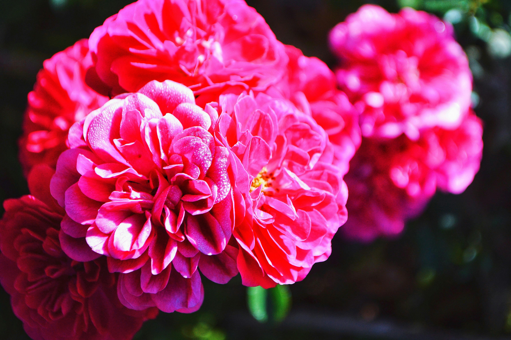
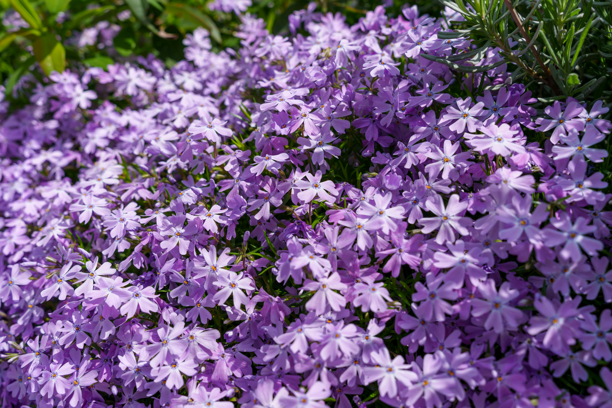

Багаторічні садові квіти
Айстри

Айстра — це багаторічна рослина, яка належить до родини айстрових і славиться своїми яскравими кольорами.
У світі налічується більш ніж 180 різноманітних видів айстр: від мініатюрних ґрунтопокривних сортів, що не перевищують 10 см у висоту, до справжніх “велетнів”, які сягають до 1,5-2 м.
Ці квіти цвітуть восени, прикрашаючи сади та клумби на тлі падаючого листя.
Айстри можуть мати різноманітні відтінки: від білого та рожевого до синього та фіолетового.
Усі айстри – це чудові медоноси, які приваблюють бджіл та корисних метеликів.
Рослини ростуть в різних умовах і здатні адаптуватися до різних типів ґрунту.
Айстри є популярними у флористиці, їх часто використовують для оформлення букетів та композицій.
Ці квіти приваблюють не лише людей, а й комах, таких як бджоли та метелики, які запилюють їх.
Айстри потребують сонячного світла для повноцінного розвитку і цвітіння, тому їх слід садити на відкритих ділянках.
У медицині айстри використовують в народній медицині для лікування деяких захворювань.
Квітка має довгий період цвітіння, що робить її бажаним елементом для осінніх садів.
Айстри символізують любов і гармонію, тому їх часто дарують у подарунок на різні свята.
На початок сторінки
Іриси

Ірис — це багаторічна рослина, відома своїми витонченими квітами і різноманітністю видів.
Ці квіти цвітуть навесні, привносячи кольорові акценти у сади та парки.
Іриси можуть мати різноманітні відтінки, включаючи синій, фіолетовий, жовтий та білий.
Рослини відрізняються своєю формою та текстурою, зокрема широкими або витягнутими пелюстками.
Іриси мають приємний аромат, який приваблює запилювачів, таких як бджоли та метелики.
Ці квіти зазвичай ростуть у вологих умовах, тому їх часто можна знайти біля водойм або в болотистих місцях.
Іриси потребують сонця, але також можуть рости в напівтіні, що робить їх універсальними для садів.
У деяких культурах ірис символізує надію, мудрість і надійність.
Рослини не тільки красиві, але й дуже стійкі, здатні витримувати різноманітні кліматичні умови.
Іриси часто використовують у садовому дизайні, оскільки вони додають елегантності та краси будь-якому ландшафту.
На початок сторінки
Півонія

Півонія — це багаторічна квітка, відома своїми великими, пишними бутонами та яскравими кольорами.
Вона починає цвісти в кінці весни або на початку літа, прикрашаючи сади пишними, ароматними квітами.
Півонії бувають різних відтінків, включаючи рожевий, червоний, білий, жовтий та фіолетовий.
Її квітки можуть досягати до 25 см в діаметрі, утворюючи справжнє видовище під час цвітіння.
Півонія потребує багато сонця, але також добре росте в легкій півтіні.
Вона має міцну кореневу систему, що дозволяє їй жити на одному місці десятки років.
Ця квітка символізує любов, удачу та процвітання, тому її часто використовують у весільних композиціях.
Півонії також відомі своїми лікарськими властивостями та використовуються в традиційній китайській медицині.
Завдяки своєму насиченому аромату, півонії привертають бджіл, що сприяє запиленню.
Ці квіти додають саду елегантності й величності, перетворюючи його на чарівне місце під час їхнього цвітіння.
На початок сторінки
Флокс

Флокс — це багаторічна садова квітка, яка славиться своїм яскравим цвітінням і приємним ароматом.
Він може цвісти в різних кольорах: від білих та рожевих до фіолетових та червоних відтінків.
Флокси бувають високими та низькими, що дозволяє використовувати їх у різних частинах саду — від клумб до альпійських гірок.
Ці квіти цвітуть з весни до пізньої осені, що забезпечує довгий період декоративності.
Флокс добре росте на сонячних ділянках, але переносить і легку півтінь.
Вони приваблюють метеликів і бджіл, завдяки чому допомагають у запиленні інших рослин у саду.
Завдяки своїй невибагливості та витривалості, флокс є популярним вибором серед садівників.
Рослина добре переносить холод і може зимувати у відкритому ґрунті.
Флокс символізує гармонію та згоду, тому його часто використовують у декоративних композиціях.
Ця квітка додає саду яскравих фарб і надає йому романтичної атмосфери завдяки своєму пишному цвітінню.
На початок сторінки